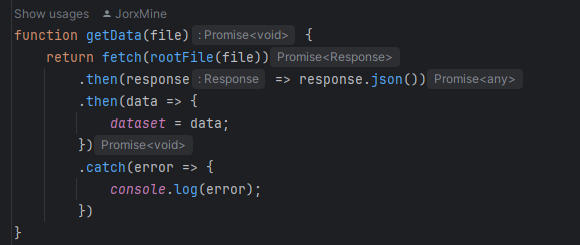
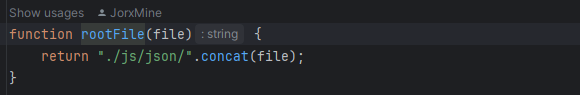
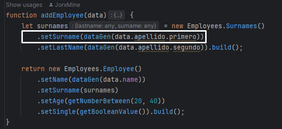
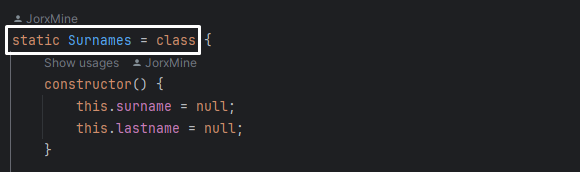
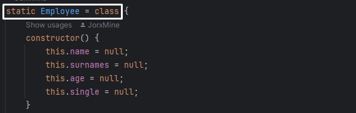
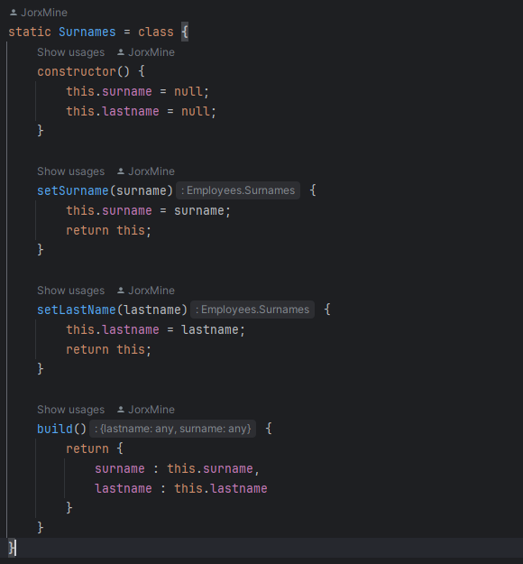

JSON y JavaScript
Introducción
En este sitio web, hablaremos de los ficheros de tipo JSON. Este acrónimo (JavaScript Object Notation), a grandes rasgos, es un fichero de texto plano que nos permite intercambiar datos. Vulgarmente los clasifican cómo arrays, pero no es correcto, de hecho, son una representación sencilla de lo que entendemos cómo un objeto. Además, pesa poco, y por este motivo, es fácil de gestionar e intercambiar.
Tipos de datos
Tal y como hemos dicho en el anterior apartado. Un fichero JSON es una representación sencilla de un objeto. Está estructurado en propiedades y valores. Las propiedades pueden tener cómo valor cadenas de caracteres, números, colección de datos, colección de objetos y valores booleanos.
- string: Este tipo de variable acepta cadenas de caracteres.
- numérica: Acepta todo tipo de números ( Integer, Double, Float, etc. ).
- booleanos: Acepta dos valores true o false.
-
Colección de datos:
- Acepta una colección de valores.
- Acepta una colección de objetos con sus propiedades.
Manipulación de los ficheros JSON
Lectura de un fichero
Para poder leer un fichero de tipo JSON desde JavaScript, tenemos que usar la función fetch(). Esta función devuelve una promesa. Es decir, nos devolverá un resultado. Si queremos recuperar la información del fichero JSON, tendremos que facilitar a fetch() la ruta dónde ha de encontrar el fichero al que queremos acceder.
Si nos fijamos en la anterior captura, dentro del fetch() hay una función llamada rootFile(). Esta función facilita la carpeta root dónde se encuentra los ficheros JSON. Finalmente, el nombre del fichero, lo pasaremos cómo parámetro de la función getData() y la información del fichero la almacenaremos en una variable.
Acceso a las propiedades
Sabemos que, un JSON, es una representación sencilla de lo que entendemos cómo una clase. Para acceder a sus propiedades, tendremos que escribir el nombre de la clase, seguido de un punto y, por consiguiente escribir la propiedad a la que queremos acceder. En el rectángulo que hay en la captura, podemos ver cómo accedemos a la propiedad primero. En este caso, estamos accediendo a un objeto llamado apellido, y dentro de este objeto, accedemos a una propiedad llamada primero.
Almacenar la información
Para almacenar la información en una variable, tenemos que crear una clase con la misma estructura que tiene el fichero de dónde sacaremos la información. Para ello, crearemos una clase principal y dos secundarias (surnames y employee). Surnames, almacenará los apellidos. Employee la información básica del trabajador.
 Una vez tenemos definida la clase, crearemos su constructor. Las propiedades estarán inicializadas con valor 'null', ya que a posteriori les daremos un valor a través de él. Dentro, hay 2 métodos: setSurname() y setLastName(). Estos métodos, los usaremos para dar valor a las propiedades. Además, cada constructor, SIEMPRE tendrá un método llamado build() que se encargará de generar la clase con los campos que hemos decidido darles algún valor.
